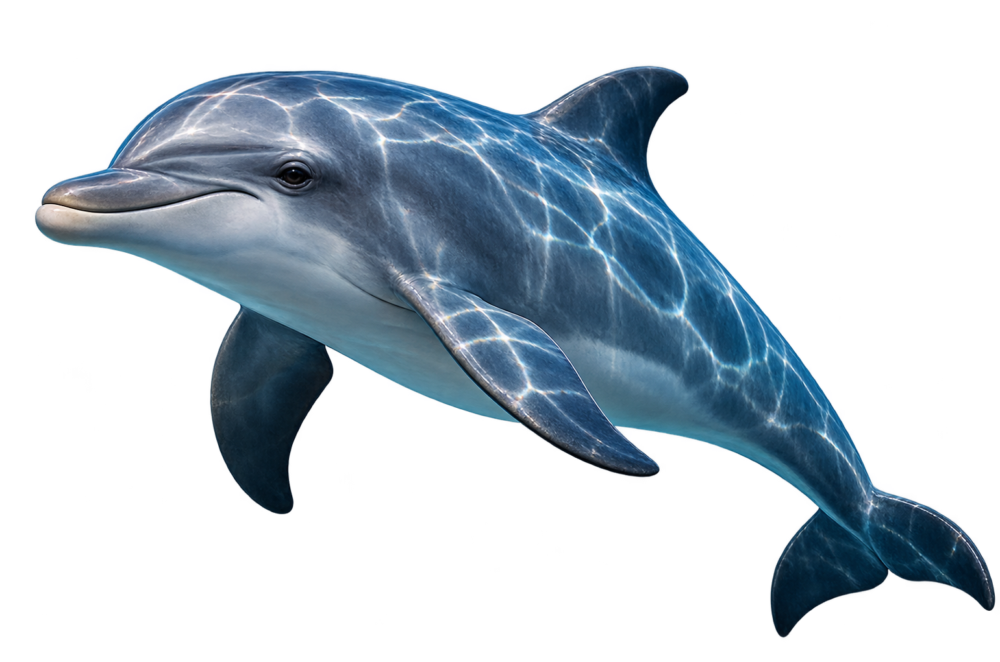
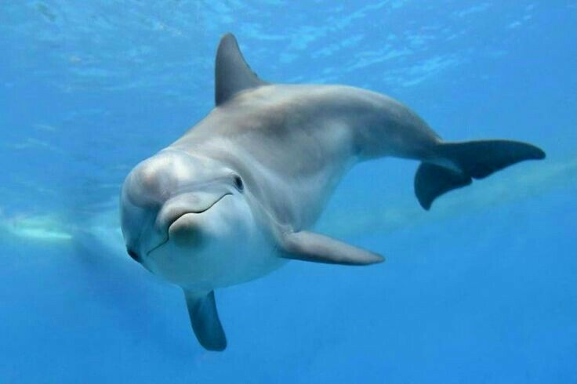
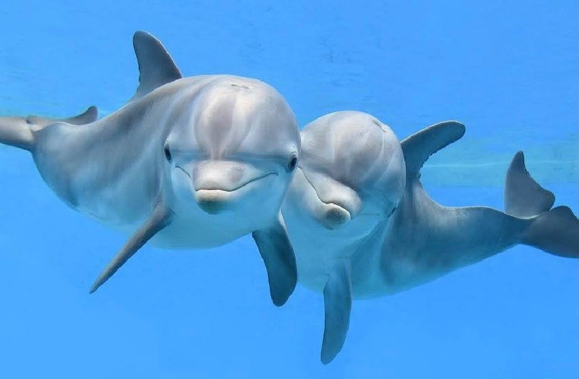
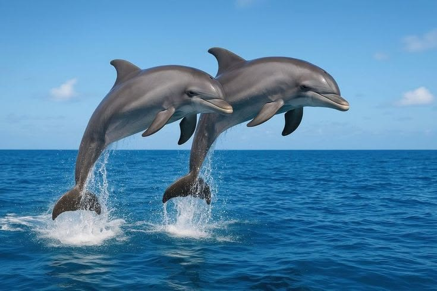

Golfinho
Delphinus delphis
Os golfinhos são mamíferos marinhos conhecidos por sua inteligência e comportamento sociável. São encontrados em oceanos e mares de diversas regiões do mundo, especialmente em águas tropicais e temperadas.

Curiosidades
Alimentação
São carnívoros e se alimentam principalmente de peixes, lulas e outros pequenos animais marinhos.
Tempo de vida
Os golfinhos podem viver, em média, de 20 a 50 anos, dependendo da espécie.
Sono Diferente
Os golfinhos dormem com apenas metade do cérebro por vez, mantendo a outra metade alerta para respirar e se proteger.
Nascimento
As fêmeas dão à luz geralmente a um filhote por vez, que nasce na água e recebe os cuidados da mãe nos primeiros anos de vida.
Importantes para o ecossistema
Ajudam a manter o equilíbrio dos ecossistemas marinhos, controlando populações de peixes e outros animais.
Habitat
Vivem em oceanos e mares de todo o mundo.


Você Sabia?
Os golfinhos ajudam a manter o equilíbrio do oceano ao controlar as populações de peixes e outros animais marinhos. Assim, contribuem para a saúde do ecossistema.
